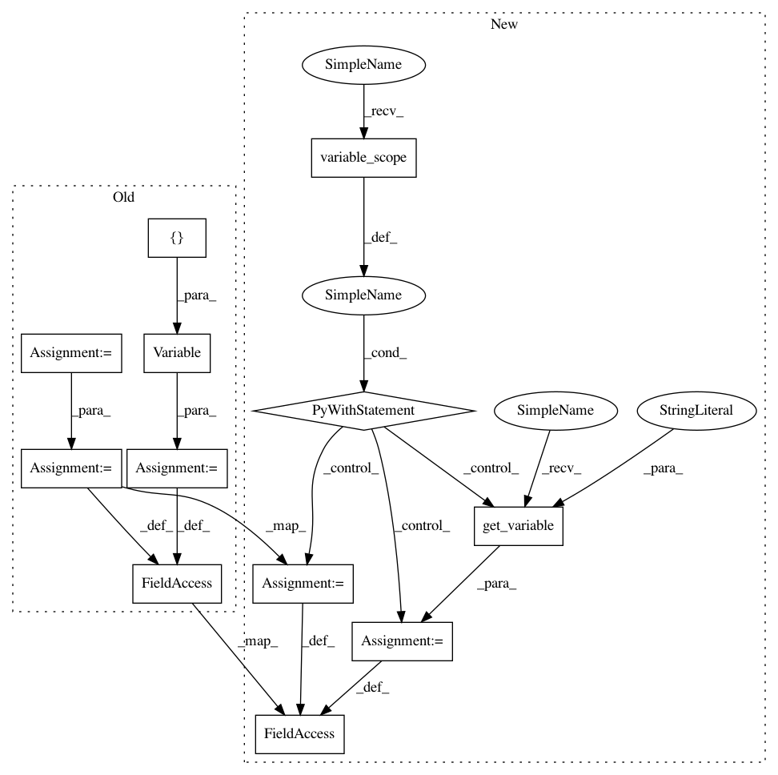

6f528bb277012ec96bae86c30ef1dbd5eb3c2130,tensorlayer/layers.py,Word2vecEmbeddingInputlayer,__init__,#Word2vecEmbeddingInputlayer#Any#Any#Any#Any#Any#Any#Any#Any#Any#Any#Any#Any#Any#,244
Before Change
// multiply by the embedding matrix.
// embed is the outputs of the hidden layer (embedding layer), it is a
// row vector with "embedding_size" values.
embeddings = tf.Variable(
E_init(shape=[vocabulary_size, embedding_size], **E_init_args))
embed = tf.nn.embedding_lookup(embeddings, self.inputs)
// Construct the variables for the NCE loss (i.e. negative sampling)
nce_weights = tf.Variable(
nce_W_init(shape=[vocabulary_size, embedding_size], **nce_W_init_args))
nce_biases = tf.Variable(nce_b_init([vocabulary_size], **nce_b_init_args))
// Compute the average NCE loss for the batch.
// tf.nce_loss automatically draws a new sample of the negative labels
// each time we evaluate the loss.
self.nce_cost = tf.reduce_mean(
tf.nn.nce_loss(weights=nce_weights, biases=nce_biases,
inputs=embed, labels=train_labels,
num_sampled=num_sampled, num_classes=vocabulary_size,
After Change
// multiply by the embedding matrix.
// embed is the outputs of the hidden layer (embedding layer), it is a
// row vector with "embedding_size" values.
with tf.variable_scope(name) as vs:
// embeddings = tf.Variable(
// E_init(shape=[vocabulary_size, embedding_size], **E_init_args))
embeddings = tf.get_variable(name="embeddings",
shape=(vocabulary_size, embedding_size),
initializer=E_init,
**E_init_args)
embed = tf.nn.embedding_lookup(embeddings, self.inputs)
// Construct the variables for the NCE loss (i.e. negative sampling)
// nce_weights = tf.Variable(
// nce_W_init(shape=[vocabulary_size, embedding_size], **nce_W_init_args))
nce_weights = tf.get_variable(name="nce_weights",
shape=(vocabulary_size, embedding_size),
initializer=nce_W_init,
**nce_W_init_args)
// nce_biases = tf.Variable(nce_b_init([vocabulary_size], **nce_b_init_args))
nce_biases = tf.get_variable(name="nce_biases",
shape=(vocabulary_size),
initializer=nce_b_init,
**nce_b_init_args)
// Compute the average NCE loss for the batch.
// tf.nce_loss automatically draws a new sample of the negative labels
// each time we evaluate the loss.
self.nce_cost = tf.reduce_mean(
tf.nn.nce_loss(weights=nce_weights, biases=nce_biases,
inputs=embed, labels=train_labels,
num_sampled=num_sampled, num_classes=vocabulary_size,
In pattern: SUPERPATTERN
Frequency: 3
Non-data size: 12
Instances
Project Name: tensorlayer/tensorlayer
Commit Name: 6f528bb277012ec96bae86c30ef1dbd5eb3c2130
Time: 2016-07-21
Author: haodong@dyn1227-42.wlan.ic.ac.uk
File Name: tensorlayer/layers.py
Class Name: Word2vecEmbeddingInputlayer
Method Name: __init__
Project Name: tensorlayer/tensorlayer
Commit Name: 6f528bb277012ec96bae86c30ef1dbd5eb3c2130
Time: 2016-07-21
Author: haodong@dyn1227-42.wlan.ic.ac.uk
File Name: tensorlayer/layers.py
Class Name: DropconnectDenseLayer
Method Name: __init__
Project Name: tensorlayer/tensorlayer
Commit Name: 6f528bb277012ec96bae86c30ef1dbd5eb3c2130
Time: 2016-07-21
Author: haodong@dyn1227-42.wlan.ic.ac.uk
File Name: tensorlayer/layers.py
Class Name: DenseLayer
Method Name: __init__
Project Name: tensorlayer/tensorlayer
Commit Name: 6f528bb277012ec96bae86c30ef1dbd5eb3c2130
Time: 2016-07-21
Author: haodong@dyn1227-42.wlan.ic.ac.uk
File Name: tensorlayer/layers.py
Class Name: Word2vecEmbeddingInputlayer
Method Name: __init__